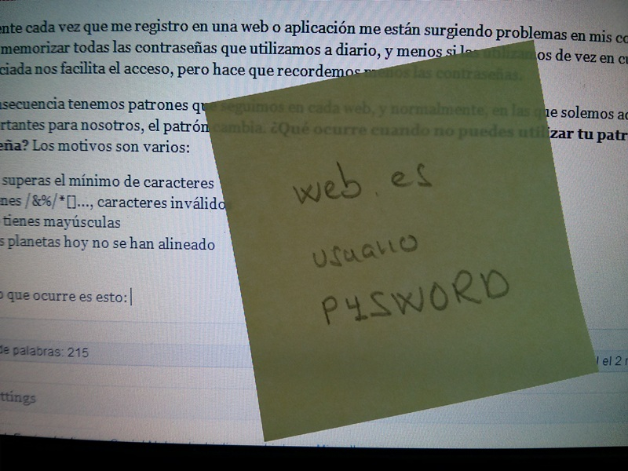

Las password obligadas no son seguras
La seguridad en las aplicaciones es un aspecto que atribuimos a expertos y desarrolladores. Pero, ¿hay mayor frustración para un usuario que saber que sus datos han sido perdidos o robados? Un fallo de seguridad provoca una mala experiencia en los usuarios afectando de una manera muy directa a la marca en sí.
¿Y yo que hago?
En nuestro caso, no podemos realizar ninguna tarea de seguridad, pues no es nuestro terreno, pero si podemos orientar al usuario a que no cometa fallos que pongan en peligro la seguridad de su cuenta.
Password obligadas
Últimamente cada vez que me registro en una web o aplicación me están surgiendo problemas en mis contraseñas. No podemos memorizar todas las que utilizamos a diario, y menos si las utilizamos de vez en cuando. Mantener la sesión iniciada nos facilita el acceso, pero hace que recordemos menos las contraseñas.
Como consecuencia tenemos patrones que seguimos en cada web, y normalmente, en las que solemos acceder más o son más importantes para nosotros, el patrón cambia.* ¿Qué ocurre cuando no puedes utilizar tu patrón en una contraseña?* Los motivos son varios:
- No superas el mínimo de caracteres
- Tienes %&$*[]..., caracteres inválidos
- No tienes mayúsculas
- Los planetas hoy no se han alineado
- ... Al final lo que ocurre es esto:

Contraseñas guardadas en papel
Esto si provoca un problema de seguridad debido a que cualquiera que pase por delante del ordenador podría acceder a estos datos. Además genera frustración en el usuario al no poder registrarse como quiere. Yo he abandonado registros de aplicaciones por no poder utilizar mi patrón de contraseñas, y creo que no soy el único.
En la mitad anda la virtud (o eso dicen)
Dentro de un límite, siempre debemos de dar total libertad al crear contraseñas en nuestras aplicaciones. Lo mejor son los indicadores de fortaleza de la contraseña. Esta opción nos da la información para saber si la contraseña es fuerte o no, es decir, nos orienta.
Es normal poner límites, no debemos permitir que una persona tenga una contraseña de un carácter porque lo perjudicaría. No obstante, obligar a esta a seguir tu patrón provocará más fallos de seguridad que si sigue el suyo ;).